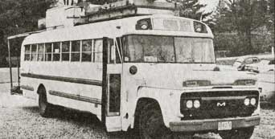

Seems like every time somebody comes to visit, we're all tied up with one last-minute thing or another and just can't find enough ticks on the clock to do our callers justice. Such was our painful plight the other day when-lo and behold-in drove a miles-weary Don and Judy Mosey with their methane-powered, solar-heated superbus (affectionately known as "Uncle Ben").
Now, we'd heard of "Uncle Ben"-and thought enough of the Moseys' machine to mention it in MOTHER N0. 32's "Energy Flashes"-but seeing the vehicle for real is something else again. So we grabbed the closest camera, took a quick snapshot, and stuffed the photo into this issue so you could enjoy the experience, too.
At first glance, "Uncle Ben" doesn't appear to be much different than any one of several hundred other recycled schoolbuses cruising the highways . . . but look again. That odd contraption on the roof, for instance, turns out to be an inner tube digester which produces enough methane from the Moser's own waste to keep a small on-board refrigerator running cool and convenient. And then there's those solar units that provide the vehicle's occupants with hot showers and toasty-warmth even on the coldest of days. And under the hood, of course, are minor modifications that produce the most major difference of all: "Uncle Ben" can run up to 350 miles on a tankful of methane . . . and can even switch over to propane or plain old gasoline whenever the need arises!
The Moseys are quite a couple, too, and right now they're evolved in projects ranging from trying to establish a crosscountry network of methane "filling stations" to holding alternative energy demonstrations at schools, festivals, and state fairs. Don and Judy nay they'll barter for their fee with any college or organization that would like them to speak and/or help set up alternative energy systems. You can contact them by writing Don and Judy Mosey, c/o Vern Mosey, 525 Davis Ave., Glendale, Calif. 91201.-TK
|
 |
|
|